4: Rupee Tím, Opal, Cung Construct Chắc (Strong hoặc Mighty tuỳ tiến độ), Pin Zonai Cỡ Lớn
Miniboss
Phantom Ganon (Hang Lindor’s Brow)
Trang bị
Rupee Bạc, Vải Dù Horse-God, Thuốc Cay, Bình Thể Lực, Áo Lượn, Pin Zonai Cỡ Lớn (kỷ lục Nghi Lễ Nhảy Dù)
Trước / sau
Vực Sâu Trung Tâm Hyrule / Đền Thờ Bị Lãng Quên
Biên Giới Tabantha là một chặng ngắn nhưng nhiều việc: sửa chiếc xe hỏng và bắt ngựa hoang cho Zumi ở Trạm Ngựa New Serenne, dọn cái giếng ngay cạnh trạm, chặt mấy cái cây hoá quái cho Hestu, rồi bắc ván lên Tháp Quan Sát Lindor’s Brow để phóng sang Đảo Courage — nơi có Đền Thờ Nhỏ Taunhiy, Nghi Lễ Nhảy Dù và Áo Lượn. Cuối chương là Hang Lindor’s Brow với Phantom Ganon, một Ngọc Bubbul và Đền Thờ Nhỏ Taki-ihaban.
Bảng trên tóm tắt cả chương trong một lần nhìn: vùng, nhiệm vụ, số Đền Thờ Nhỏ, hang, giếng, hạt Korok và rương. Bên dưới là tuyến đường chi tiết, chia đúng theo từng mục của chương, kèm ảnh minh họa cho từng bước.
Mục lục
Mục lục của chương gồm một mục tuyến đường nhanh, sáu mục đi đường và một mục tổng kết. Bấm vào từng dòng để nhảy thẳng tới mục đó, hoặc dùng mục lục dính ở cột trái.
Tóm tắt cả chương trong sáu chặng, từ trạm ngựa trên Đồng Bằng Bắc Hyrule tới Hang Lindor’s Brow.
Trạm Ngựa New Serenne: sửa chiếc xe của Zumi, bắt một con ngựa hoang, nhận Vải Dù Horse-God, rồi dọn cái giếng cạnh hàng rào.
Đền Thờ Nhỏ Sinakawak, rồi đổi Ánh Sáng Chúc Phúc lấy Bình Thể Lực ở Lookout Landing.
Chặt những cái cây đáng sợ của Hestu và mở rộng thêm một ô túi đồ.
Bắc cầu ván sang Tháp Quan Sát Lindor’s Brow rồi phóng lên Đảo Courage.
Nhảy xuyên các vòng, chạy Nghi Lễ Nhảy Dù tính giờ để lấy Áo Lượn, phá kỷ lục để lấy Pin Zonai Cỡ Lớn, rồi dọn Đền Thờ Nhỏ Taunhiy.
Lượn về Sườn Hyrule để lấy hạt Korok bằng Xuyên và vào Hang Lindor’s Brow.
Trạm Ngựa New Serenne
Horse-Drawn Dreams. Trạm Ngựa New Serenne nằm trên con đường băng qua Đồng Bằng Bắc Hyrule. Zumi đứng cạnh chiếc xe mất bánh sát hàng rào chuồng ngựa; nói chuyện với cô ấy để mở nhiệm vụ Horse-Drawn Dreams. Các bước đầy đủ nằm ở trang nhiệm vụ.
Ảnh minh họa: chiếc xe hỏng và bánh xe rời của Zumi (2 ảnh)
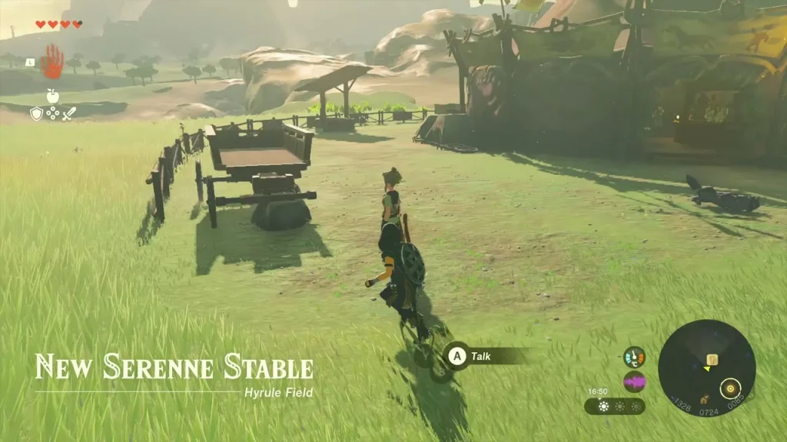
Chiếc xe gỗ gãy nằm trên cỏ cạnh hàng rào chuồng ngựa của trạm (ảnh 1/2)
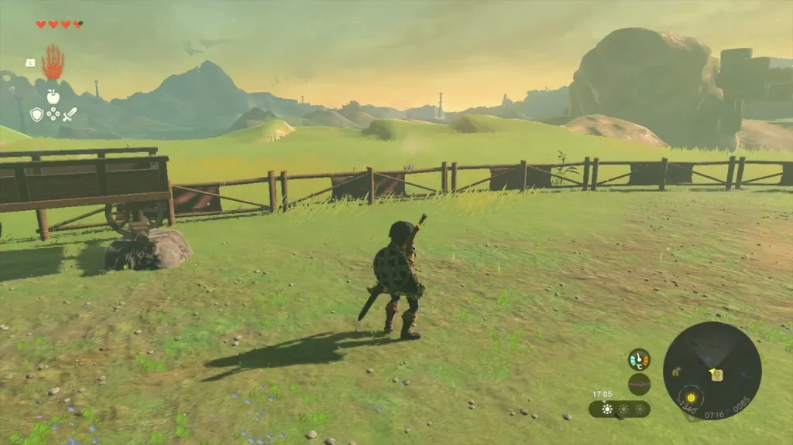
Chiếc xe mất bánh bên hàng rào chuồng, một bánh xe nằm rời trên cỏ (ảnh 2/2)
Sửa chiếc xe. Bánh xe dự phòng nằm trên bãi cỏ cạnh hàng rào. Nhấc từng chiếc bằng Siêu Tay rồi gắn vào trục, sao cho chiếc xe đứng được trên cả hai bánh.
Ảnh minh họa: ghép bánh vào trục xe (2 ảnh)
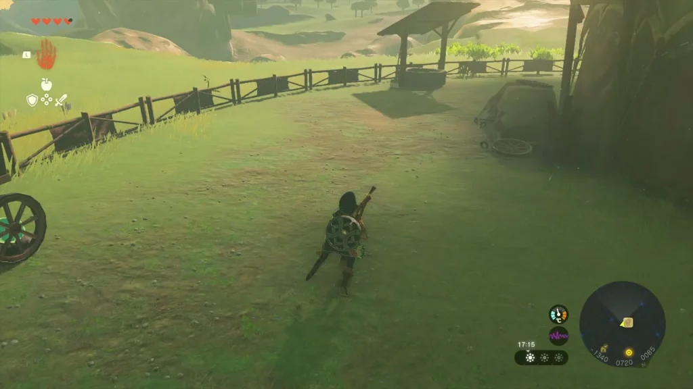
Bánh xe được Siêu Tay giữ và áp vào trục, khung gỗ phát sáng cam (ảnh 1/2)
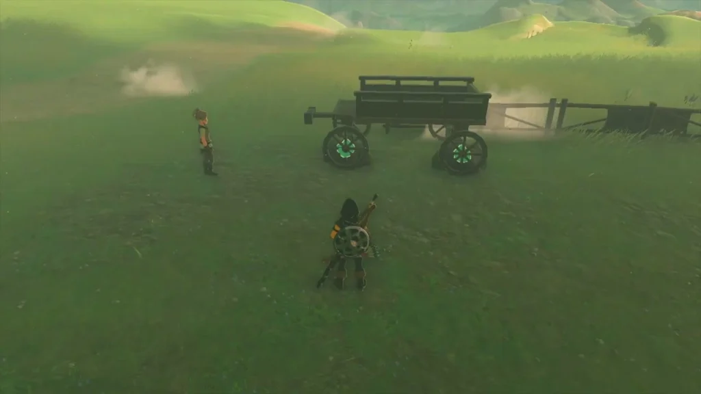
Chiếc xe đã sửa xong với hai bánh phát sáng xanh trên cỏ (ảnh 2/2)
Bắt một con ngựa hoang. Đi ra bãi cỏ trống phía bắc trạm, nơi ngựa chưa đăng ký đang gặm cỏ. Cúi thấp người để tiếp cận (một bữa ăn tăng khả năng tàng hình sẽ dễ hơn), nhảy lên lưng rồi vuốt ve cho nó bình tĩnh lại, sau đó cưỡi về chỗ Zumi.
Ảnh minh họa: tiếp cận và thuần ngựa hoang (3 ảnh)
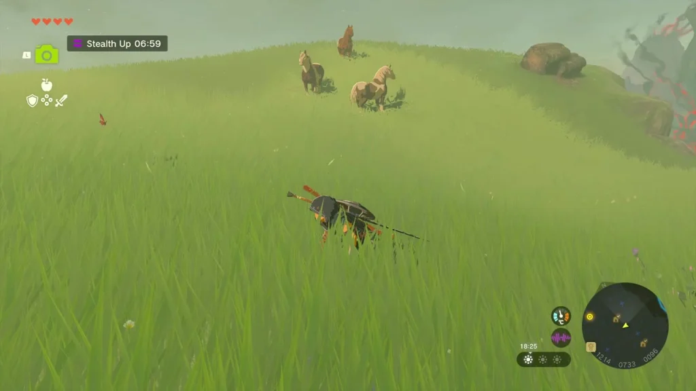
Ngựa hoang gặm cỏ trong đồng cỏ cao phía bắc trạm khi hiệu ứng tàng hình đang chạy (ảnh 1/3)
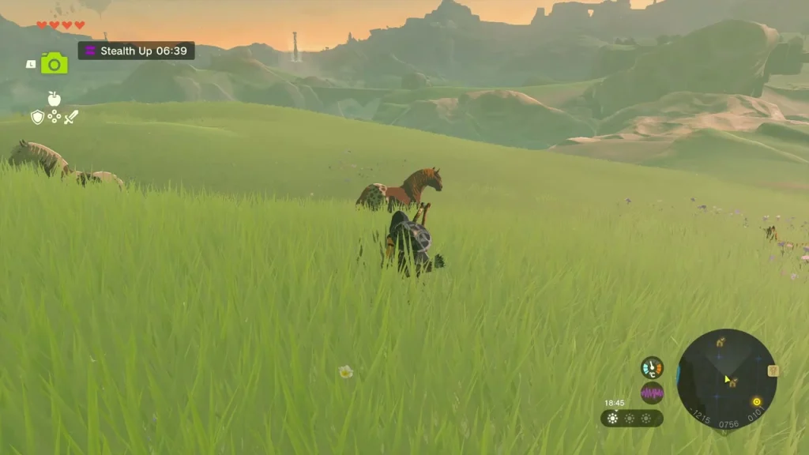
Một con ngựa hoang đứng gần trong đồng cỏ xanh, sẵn sàng để nhảy lên (ảnh 2/3)
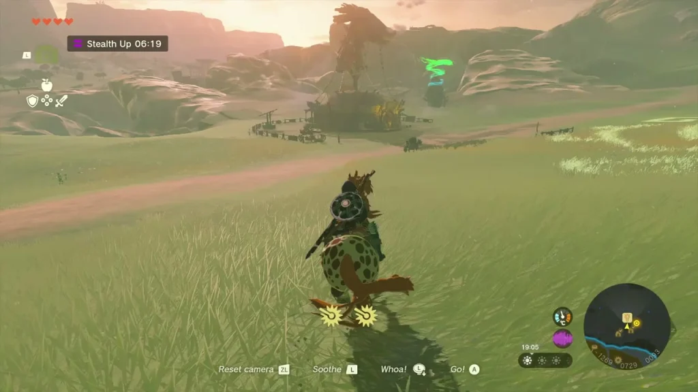
Cưỡi ngựa hoang trên lối đất với lời nhắc Vuốt ve trên màn hình (ảnh 3/3)
Phần thưởng: Rupee Bạc. Nói chuyện với Zumi khi con ngựa đã được buộc vào xe; cô ấy trả bạn một Rupee Bạc (100 Rupee).
Ảnh minh họa: buộc ngựa vào xe và nhận thưởng (2 ảnh)
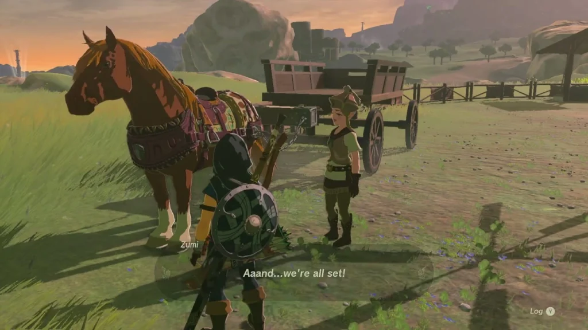
Ngựa nâu kéo chiếc xe đã sửa, đứng cạnh Zumi lúc hoàng hôn (ảnh 1/2)
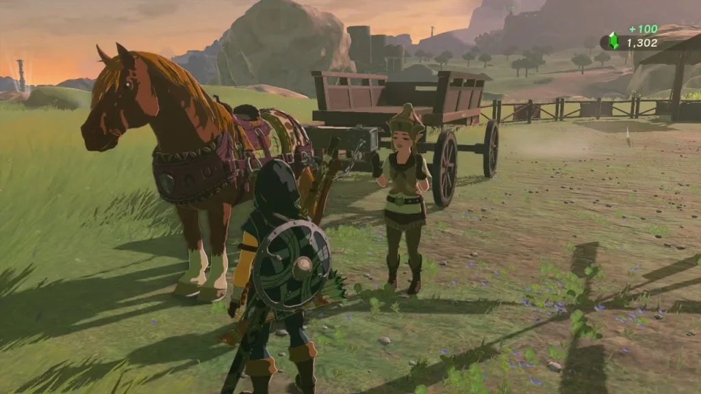
Bộ đếm Rupee nhảy thêm 100 nhờ phần thưởng Rupee Bạc ở chỗ xe ngựa (ảnh 2/2)
Vải Dù Horse-God (vải trang trí Dù Lượn). Vào trong trạm, mở Sổ Điểm Pony ở quầy và chọn Nhận phần thưởng. Năm Điểm Pony đổi được Vải Dù Horse-God; đăng ký ngựa và ngủ ở trạm đều kiếm điểm. Nói chuyện với Sprinn — người trông trạm — ngay quầy đó để lắp cho ngựa một bộ dây kéo hàng.
Ảnh minh họa: quầy trạm và phần thưởng Điểm Pony (2 ảnh)
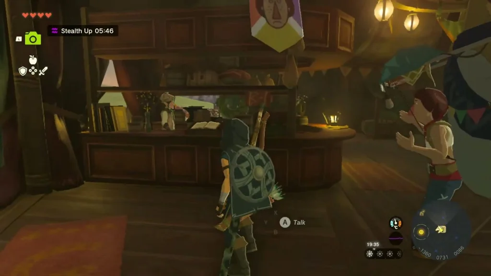
Quầy trạm ngựa trong lều với lời nhắc Nói chuyện cho Sổ Điểm Pony (ảnh 1/2)
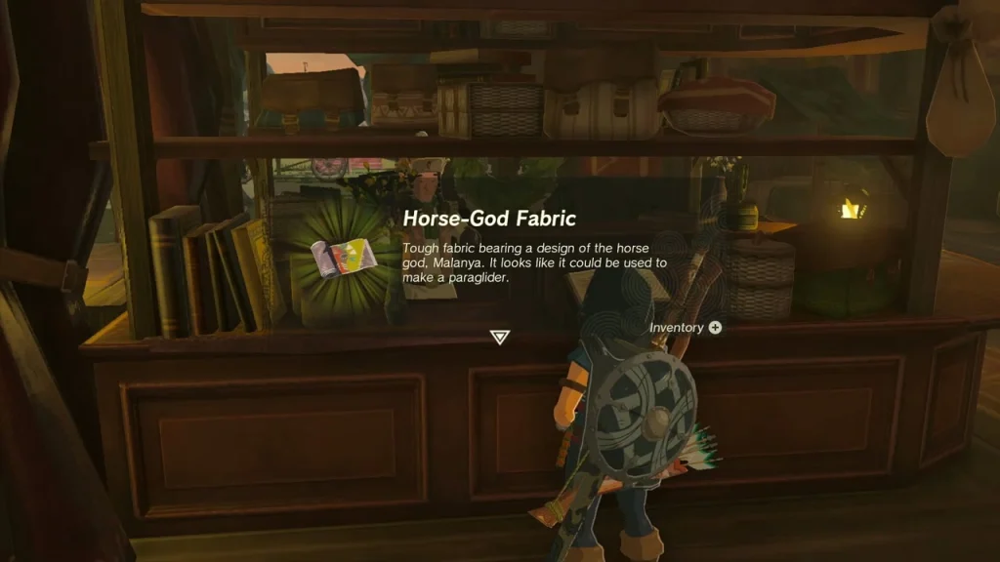
Hộp vật phẩm Vải Dù Horse-God trên quầy trạm ngựa (ảnh 2/2)
Thuốc Cay. Ariane trông Nồi Nấu ngoài trạm. Cô ấy cảnh báo về cái lạnh ở Hebra và tặng bạn một lọ Thuốc Cay để chống lạnh.
Ảnh minh họa: Thuốc Cay của Ariane (2 ảnh)
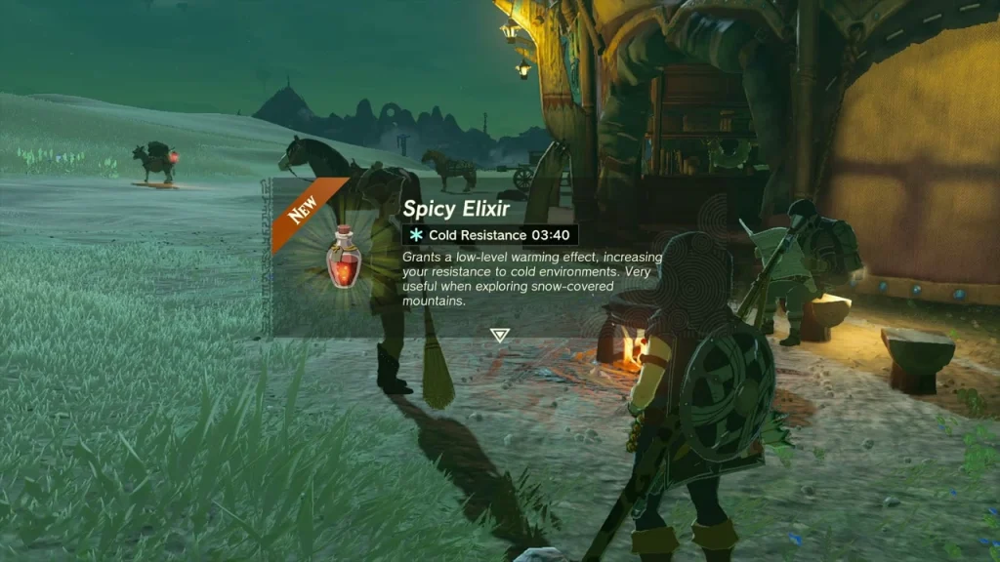
Hộp vật phẩm Thuốc Cay ghi hiệu ứng chống lạnh (ảnh 1/2)
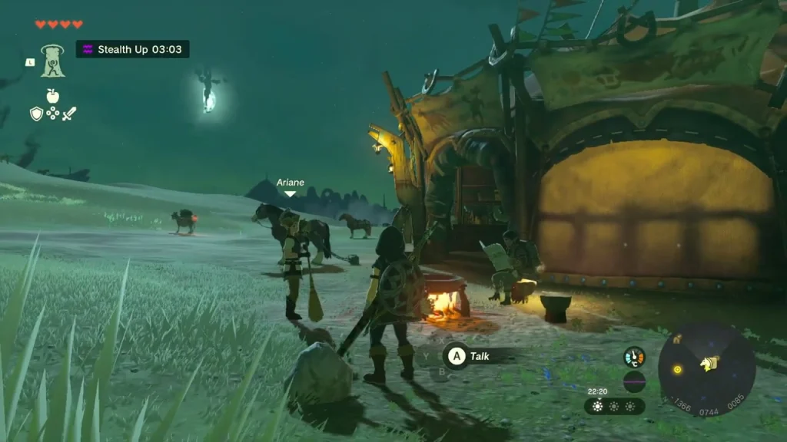
Ariane bên Nồi Nấu của trạm với lời nhắc Nói chuyện (ảnh 2/2)
Giếng Trạm Ngựa New Serenne: Rupee Tím. Cái giếng nằm dưới một mái gỗ nhỏ cạnh hàng rào chuồng ngựa. Thả người xuống và thắp sáng bằng Hạt Sáng. Một đống đá nứt đỏ chặn đường hầm thấp; đập vỡ nó bằng vũ khí nặng đã Ghép (một hòn đá gắn vào cán là đủ) hoặc bằng một mũi tên bom. Chiếc rương phía sau chứa Rupee Tím (50 Rupee). Ra ngoài bằng Xuyên qua trần hang.
Ảnh minh họa: dọn giếng và mở rương Rupee Tím (5 ảnh)
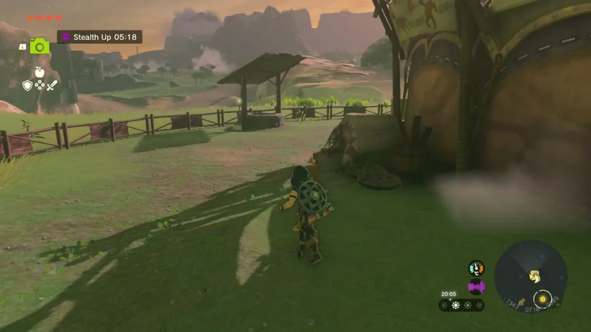
Giếng đá dưới mái gỗ nhỏ cạnh hàng rào lúc chiều tối (ảnh 1/5)
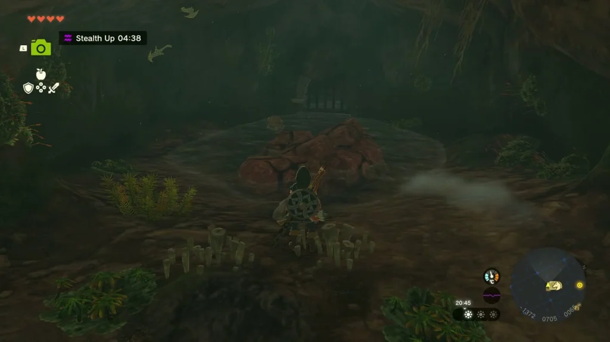
Đống đá nứt đỏ chặn đường hầm thấp trong hang giếng (ảnh 2/5)
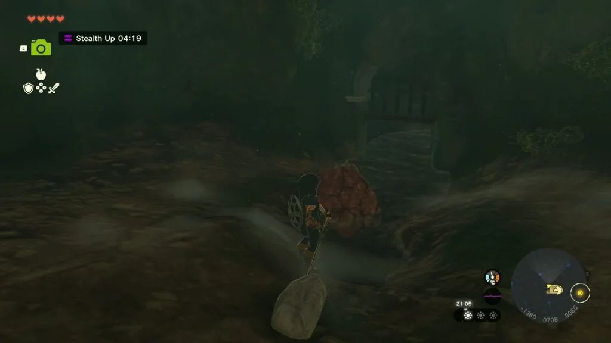
Chiếc búa đá được cầm tới chỗ đống đổ nát trong hang giếng (ảnh 3/5)
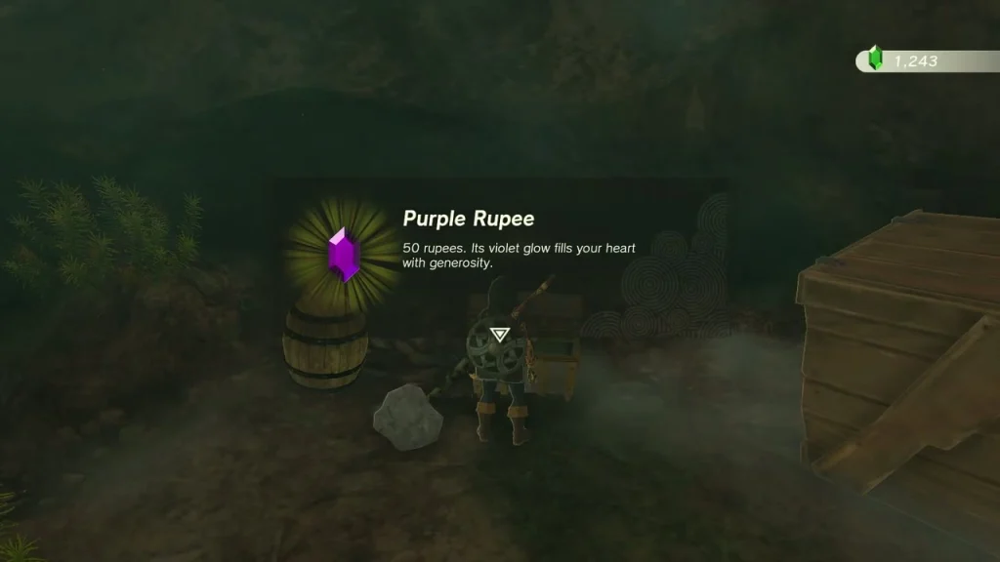
Hộp vật phẩm Rupee Tím cạnh thùng và hòm trong hang giếng (ảnh 4/5)
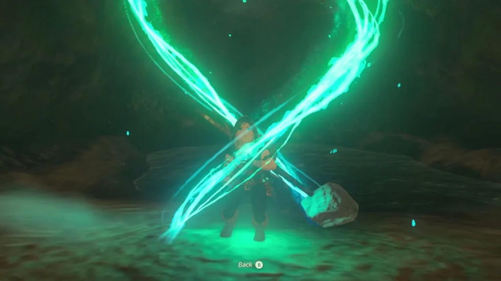
Vòng xoáy Xuyên xanh đưa người chơi lên khỏi miệng giếng (ảnh 5/5)
Xe kéo (tuỳ chọn). Khi đã lắp bộ dây kéo, ghép vài tấm ván và bánh xe thành một chiếc xe nhỏ bằng Siêu Tay, móc vào ngựa rồi chạy khắp cánh đồng. Bộ dây này dùng được cho mọi chiếc xe bạn tự ghép.
Ảnh minh họa: ghép xe kéo cho ngựa (2 ảnh)
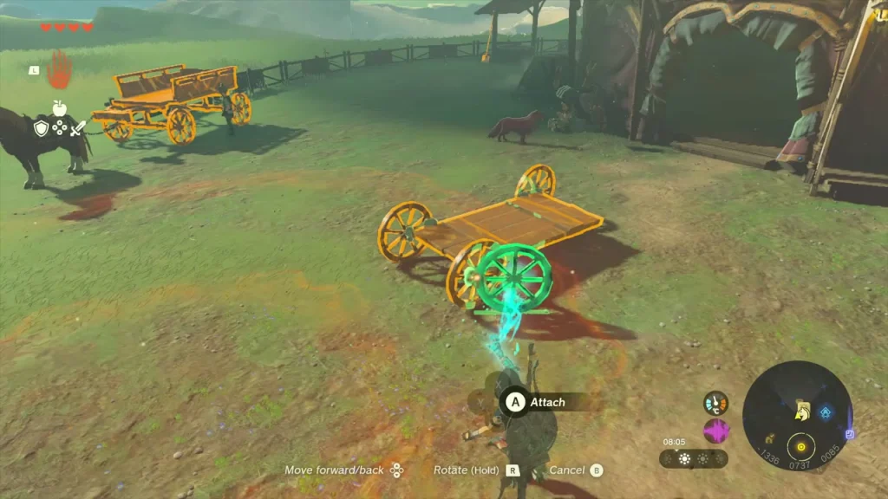
Tấm ván gỗ gắn bánh đang được ghép thành xe cạnh trạm ngựa (ảnh 1/2)
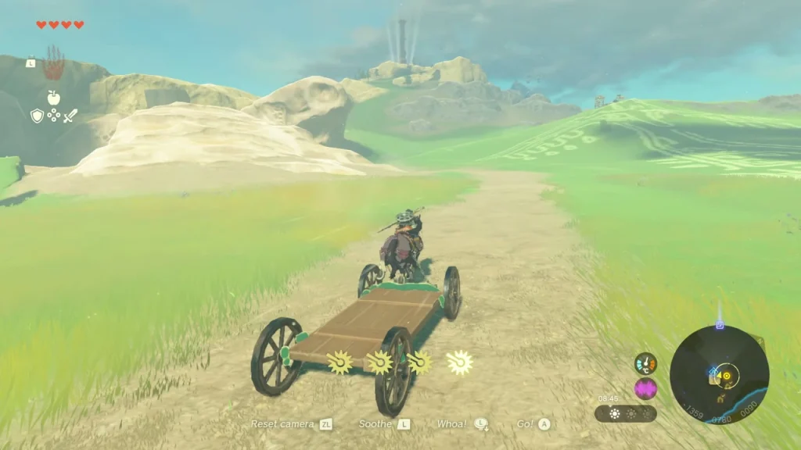
Ngựa kéo chiếc xe bốn bánh bằng ván trên lối đất (ảnh 2/2)
Đền Thờ Nhỏ Sinakawak và Bình Thể Lực
Đền Thờ Nhỏ Sinakawak (An Uplifting Device) nằm trên gò cỏ ngay phía tây bắc Trạm Ngựa New Serenne, trước một mỏm đá nhạt màu hình đầu lâu.
Ảnh minh họa: đường tới Đền Thờ Nhỏ Sinakawak (2 ảnh)
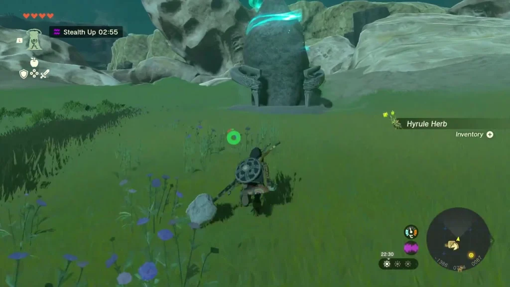
Mỏm đá của đền trên sườn cỏ, một cây Thảo Dược Hyrule bên lối đi (ảnh 1/2)
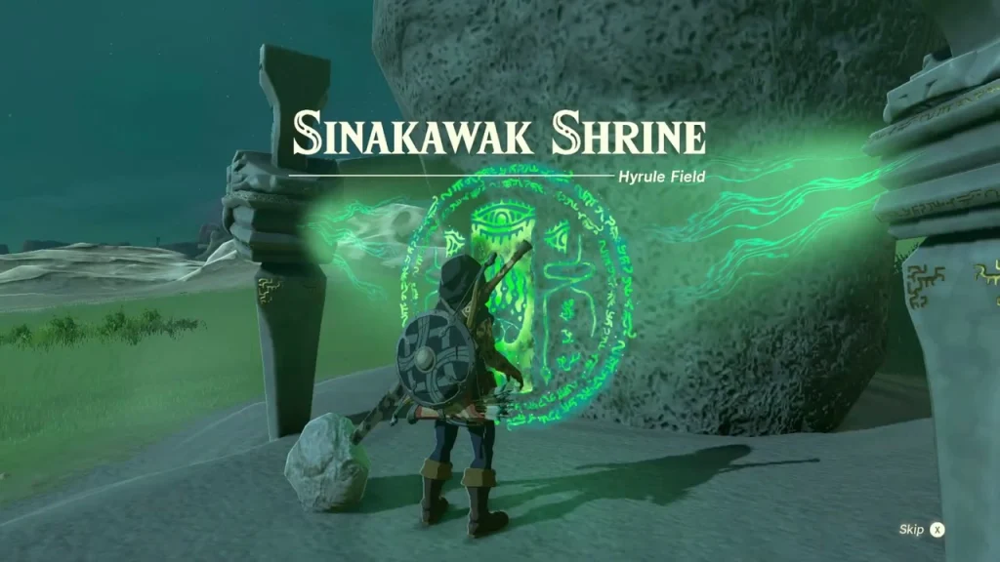
Cửa vào Đền Thờ Nhỏ Sinakawak phát sáng xanh trong vách đá (ảnh 2/2)
Bình Thể Lực. Dâng Ánh Sáng Chúc Phúc ngay. Đi tới Lookout Landing, xuống Khu Trú Ẩn Khẩn Cấp và cầu nguyện ở Tượng Nữ Thần, rồi chọn Bình Thể Lực trong hai lựa chọn Bình Máu hoặc Bình Thể Lực.
Ảnh minh họa: đổi Ánh Sáng Chúc Phúc lấy Bình Thể Lực (2 ảnh)
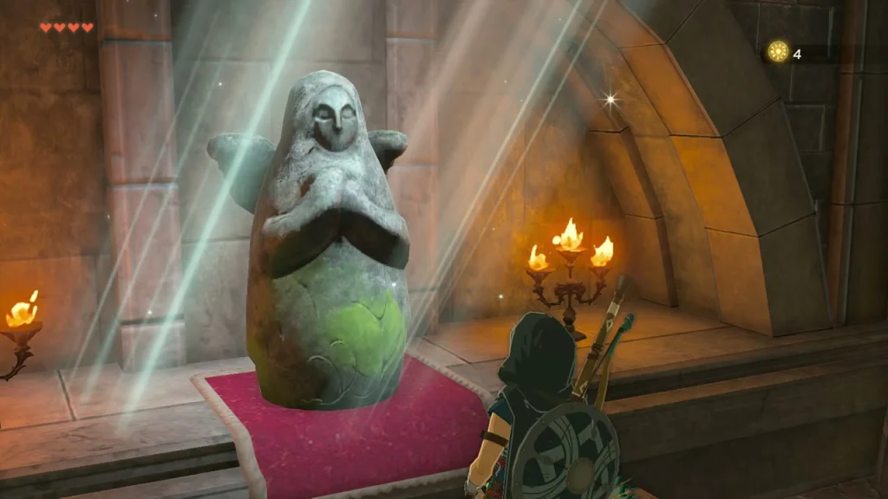
Tượng Nữ Thần trong Khu Trú Ẩn Khẩn Cấp giữa hai chân nến đang cháy (ảnh 1/2)
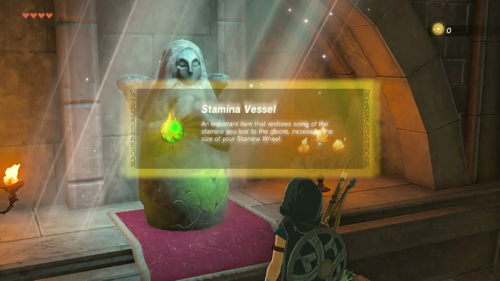
Hộp vật phẩm Bình Thể Lực trước Tượng Nữ Thần (ảnh 2/2)
Nỗi Lo Của Hestu
Hestu. Leo lên sườn đồi cỏ dưới vòm đá nhạt gần Lindor’s Brow. Hestu — con Korok khổng lồ — trốn trên sườn dốc, sợ những cái cây thật ra là quái. Nói chuyện với anh ta để mở nhiệm vụ Hestu’s Concerns, đánh từng thân cây có dấu cho tới khi đổ, rồi mang cho anh ta một Hạt Korok và chọn một túi (vũ khí, cung hoặc khiên) để tăng thêm một ô.
Sườn đồi cỏ dưới vòm đá nhạt lớn gần Lindor’s Brow (ảnh 1/3)
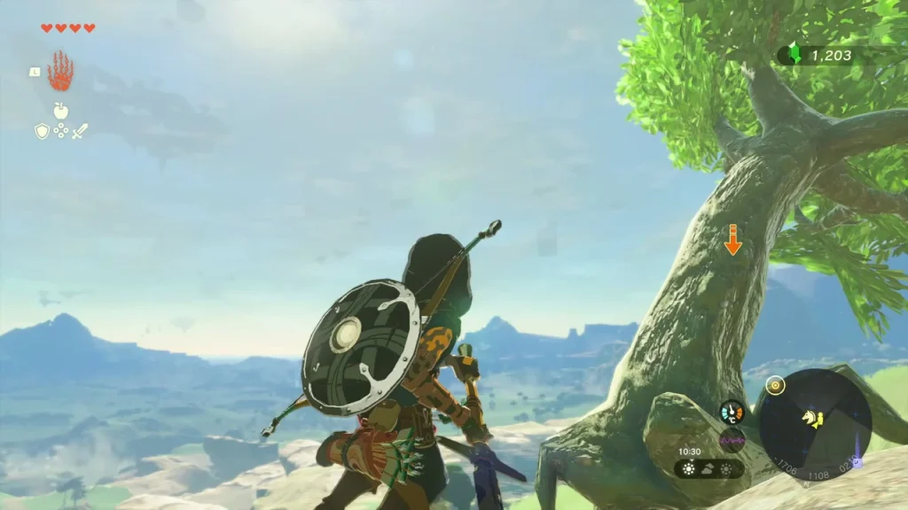
Thân cây có mũi tên cam đánh dấu đang bị đánh trên sườn cỏ (ảnh 2/3)
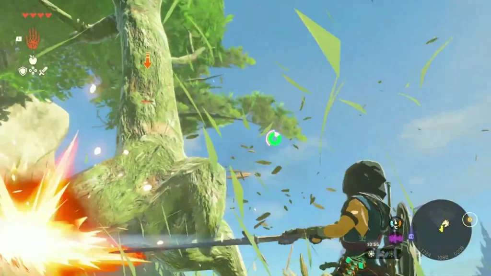
Lá bay ra từ thân cây đánh dấu khi nó đổ xuống (ảnh 3/3)
Tháp Quan Sát Lindor’s Brow
Tới tháp. Tháp Quan Sát Lindor’s Brow đứng trên một hòn đảo đá giữa ao nước, đi bộ một quãng qua vòm đá là tới. Lấy chồng ván trên bờ, ghép nối chúng thành một tấm ván dài bằng Siêu Tay rồi bắc từ bờ lên gờ đá của đảo. Leo lên, kích hoạt bảng điều khiển bên trong và bước lên bệ phóng. Tháp quét bản đồ Sườn Hyrule rồi bắn bạn lên trời; hãy lượn về phía hòn đảo vàng phía trước — Đảo Courage.
Ảnh minh họa: bắc ván lên đảo đá và phóng tháp (5 ảnh)
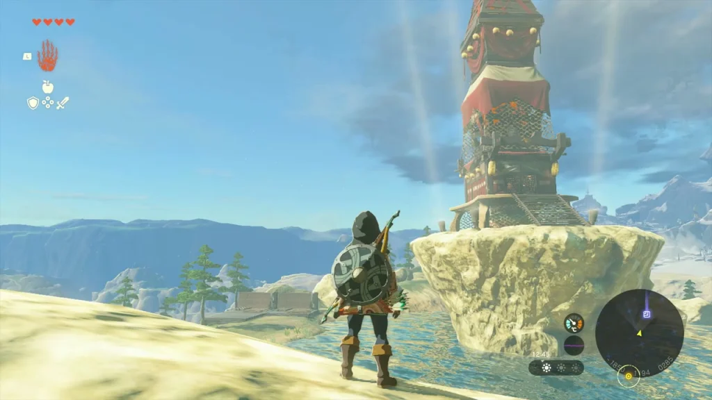
Tháp Quan Sát Lindor’s Brow trên đảo đá với những cột sáng phía trên (ảnh 1/5)
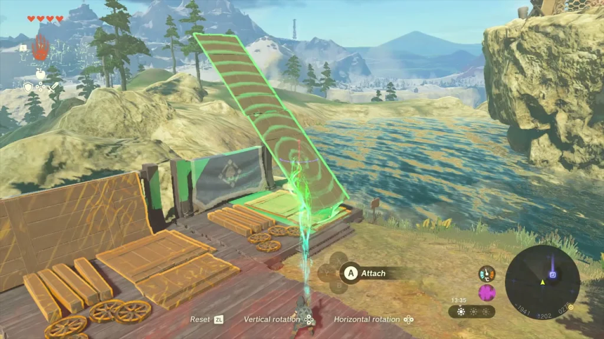
Tấm ván gỗ dài lơ lửng trên mặt nước trong lúc bắc dốc (ảnh 2/5)
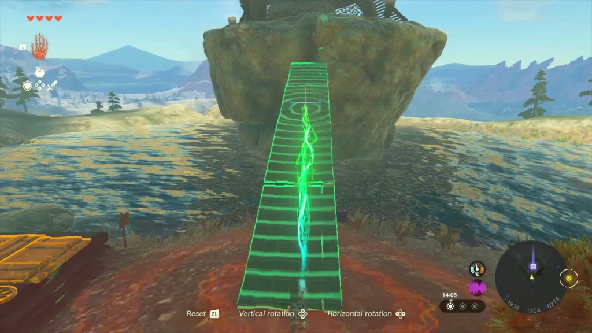
Dốc ván đã xong, chạm tới đảo đá dưới chân tháp (ảnh 3/5)
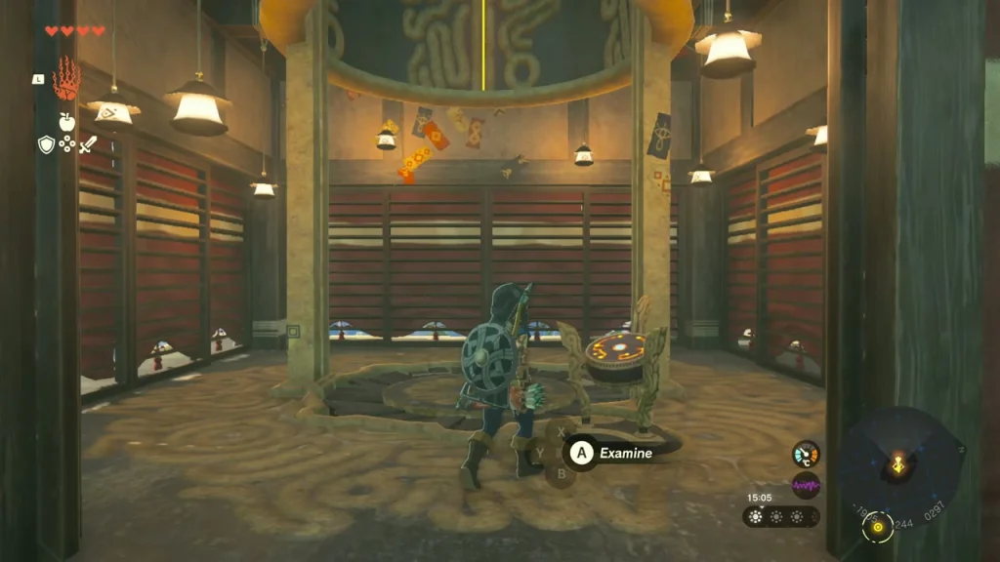
Bảng điều khiển đá giữa lòng tháp với lời nhắc Xem xét (ảnh 4/5)
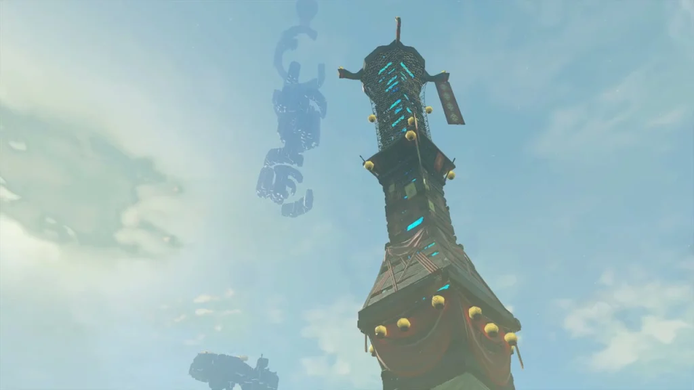
Tháp Quan Sát vươn lên trên đường chân trời khi phóng người chơi lên trời (ảnh 5/5)
Đảo Courage
Đáp xuống và hái cây. Đảo Courage là một hòn đảo đá đổ nát với cỏ vàng và Sundelion. Leo bậc thang đá rồi đi theo lối đá tới gờ nhảy ở mép đảo, vừa đi vừa hái Sundelion.
Ảnh minh họa: cảnh đảo và lối lên gờ nhảy (2 ảnh)
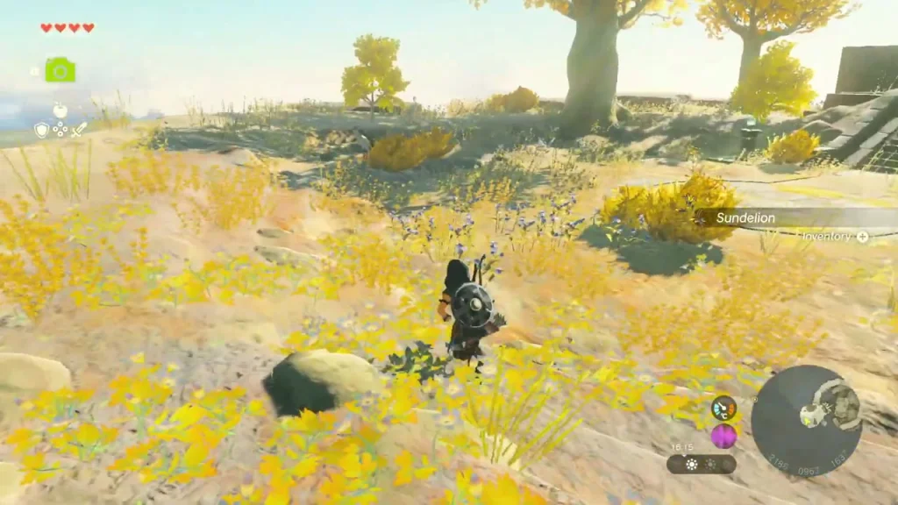
Cỏ vàng và Sundelion dưới tán cây vàng trên Đảo Courage (ảnh 1/2)
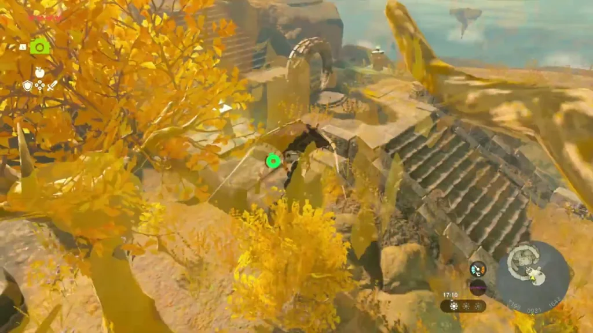
Bậc thang đá phong hoá leo qua phế tích vàng trên Đảo Courage (ảnh 2/2)
Mở Đền Thờ Nhỏ Taunhiy. Bước tới cổng vòng đá trên đỉnh cầu thang, kích hoạt con dấu xanh bên cạnh, rồi nhảy khỏi gờ và lao xuyên các vòng xanh; nếu bị lệch thì mở Dù Lượn để chỉnh hướng. Đền sẽ nhô lên khỏi mặt ao khi bạn bay hết các vòng.
Ảnh minh họa: lao qua các vòng để làm đền nổi lên (4 ảnh)
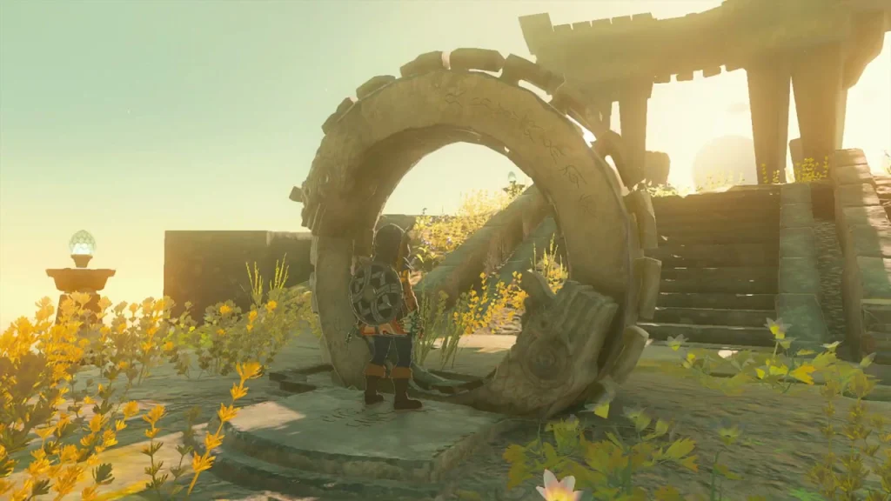
Cổng vòng đá tròn trên đỉnh cầu thang ở Đảo Courage (ảnh 1/4)
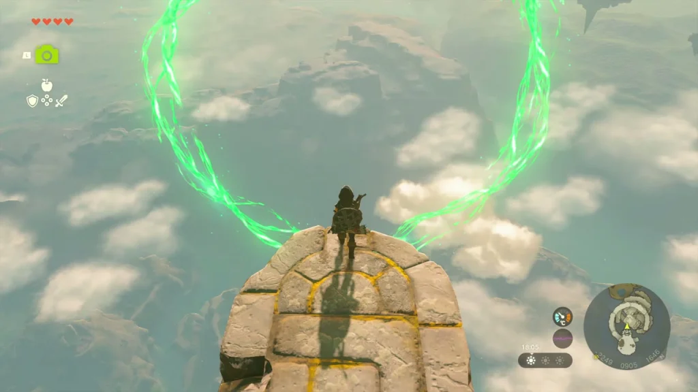
Gờ nhảy đá trên mây với một vòng xanh lớn phía trước (ảnh 2/4)
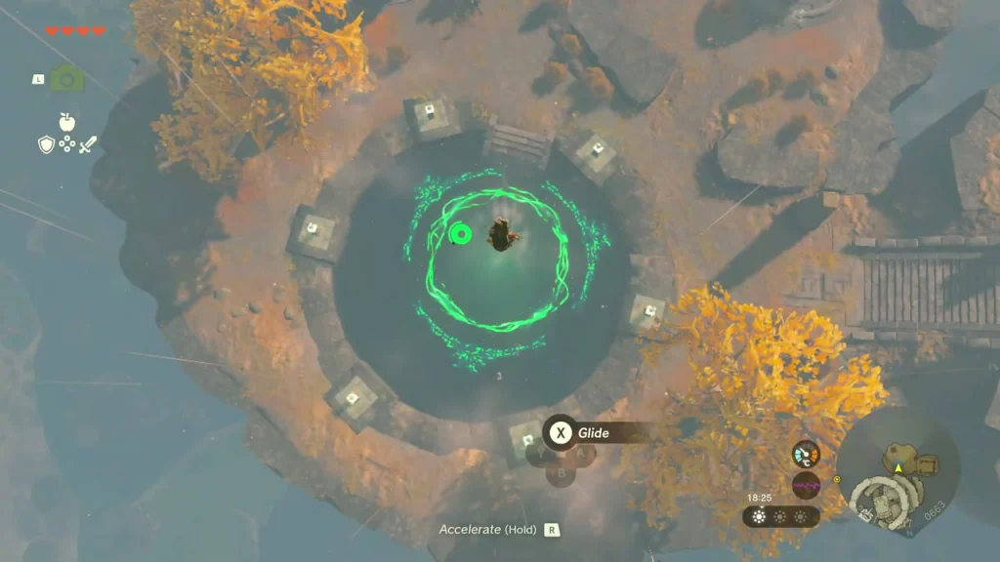
Vòng xanh nhìn từ trên cao khi người chơi lao qua phế tích của đảo (ảnh 3/4)
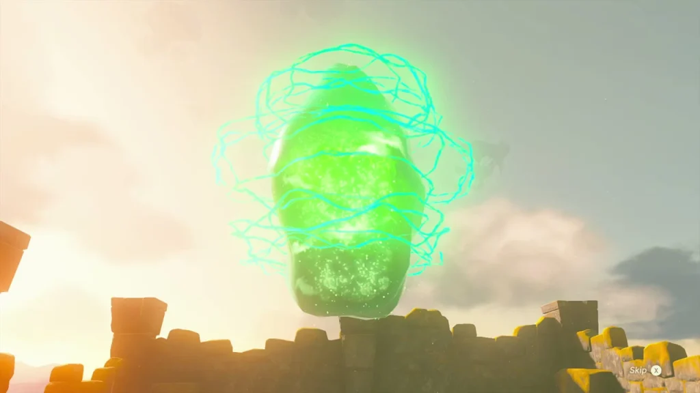
Khối đá đền phát sáng xanh nhô lên khỏi mặt ao sau màn lao vòng (ảnh 4/4)
Đền Thờ Nhỏ Taunhiy (Luyện chiến đấu: Bắn cung). Đền giờ nằm cạnh ao ở chân đảo. Bài thi dạy bắn cung giữa không trung, rương trong đền chứa Cung Construct Chắc (nhớ dọn trống một ô cung trước) và đền trao một Ánh Sáng Chúc Phúc.
Ảnh minh họa: Đền Thờ Nhỏ Taunhiy (2 ảnh)
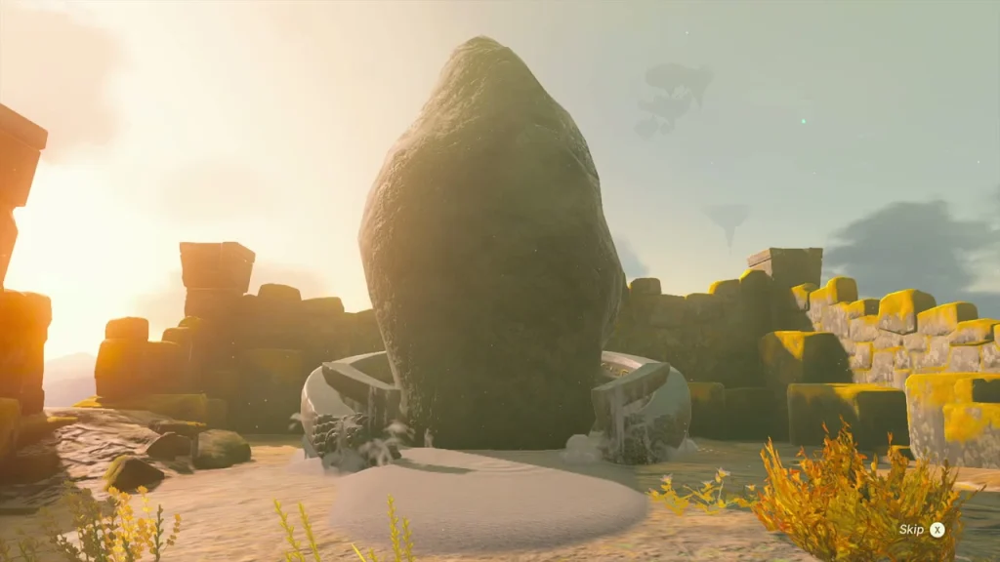
Khối đá đền cao đứng giữa những bức tường đổ trên Đảo Courage (ảnh 1/2)
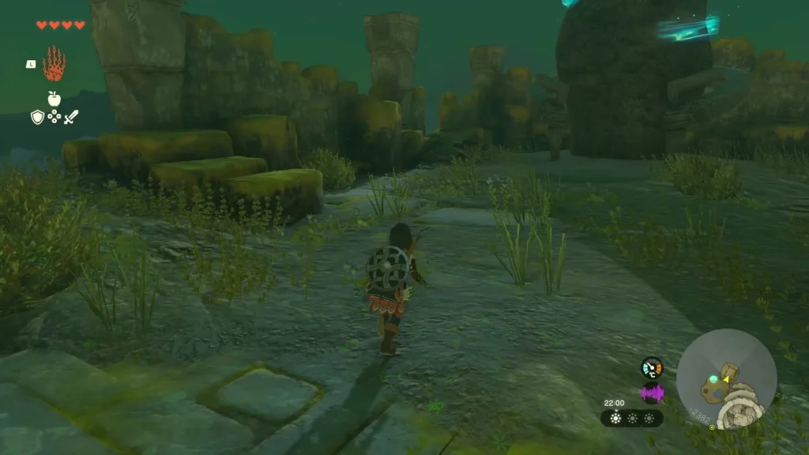
Lối đi phủ rêu qua tường đổ dẫn tới đền lúc hoàng hôn (ảnh 2/2)
Nghi Lễ Nhảy Dù: Áo Lượn. Nói chuyện với Steward Construct cạnh ao dưới. Trả một Pin Zonai, rồi nhảy từ gờ và lượn qua mọi vòng trong 35 giây. Hoàn thành là bạn nhận Áo Lượn (tăng cơ động khi nhảy dù).
Steward Construct đứng bên ao dưới trên Đảo Courage (ảnh 1/3)
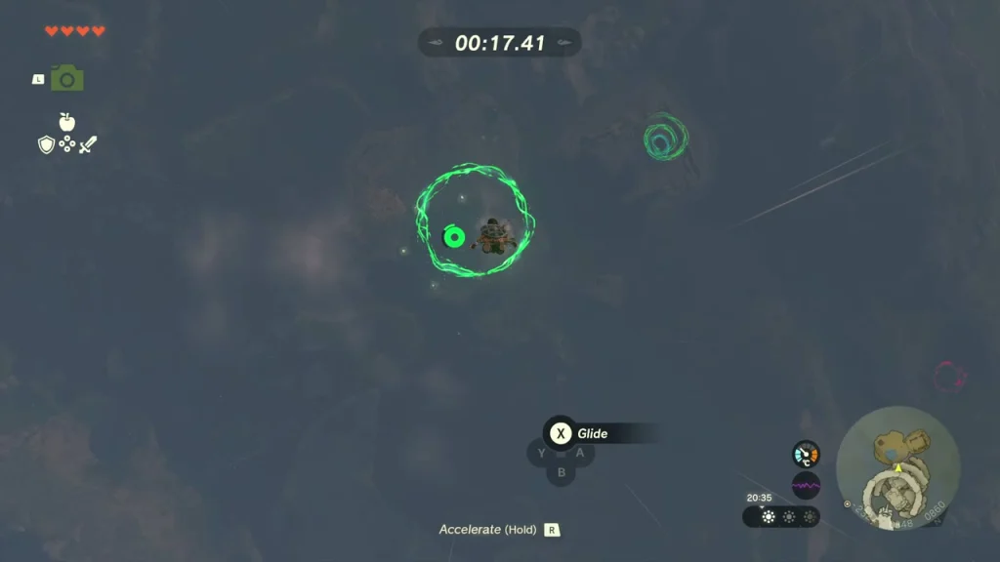
Vòng xanh phía trước trong Nghi Lễ Nhảy Dù tính giờ, đồng hồ hiện trên màn hình (ảnh 2/3)
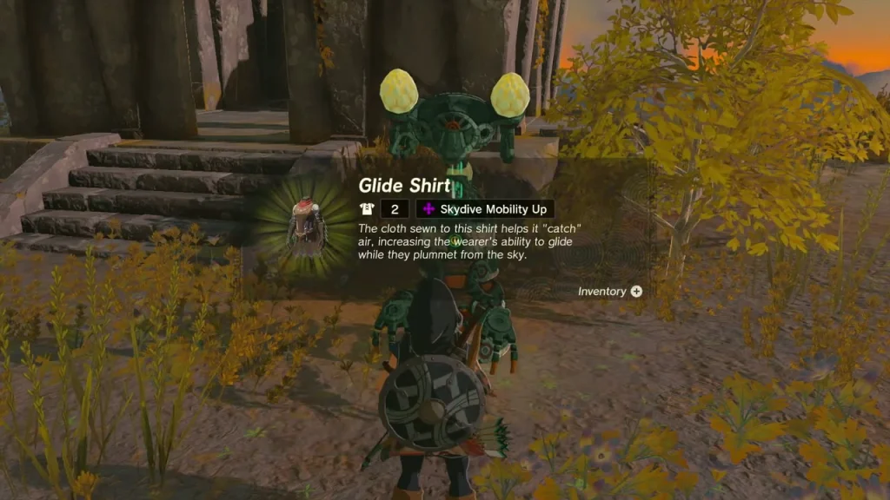
Hộp vật phẩm Áo Lượn ghi hiệu ứng tăng cơ động khi nhảy dù (ảnh 3/3)
Ghi chú về nghi lễ. Steward Construct luôn cho chạy thử miễn phí, không tính giờ trước. Mỗi lượt tính giờ tốn một Pin Zonai, nên lệch một vòng hay bay chậm là phải trả lại. Lượt lấy Áo Lượn giới hạn 35 giây, nên hãy bay một đường gọn thay vì bay nhanh; Lời Thề của Tulin (Hiền Giả Gió) rất có ích nếu bạn bị lệch khỏi vòng. Dọn hết các vòng cũng làm Đền Thờ Nhỏ Taunhiy nổi lên, và đền đó thành điểm dịch chuyển nhanh về lại đảo. Nếu trượt mất lượt nhảy, vẫn mua được Áo Lượn từ Cece ở cửa hàng quần áo Ventest với giá 4000 Rupee.
Phá kỷ lục: Pin Zonai Cỡ Lớn. Nói chuyện với Steward lần nữa và nhảy lượt thứ hai, phá kỷ lục 20 giây của nó. Mặc Áo Lượn làm đường bay dễ hơn; một lượt sạch sẽ thưởng Pin Zonai Cỡ Lớn.
Vòng xanh lớn ở cuối màn nhảy kỷ lục, đồng hồ vẫn chạy (ảnh 2/3)
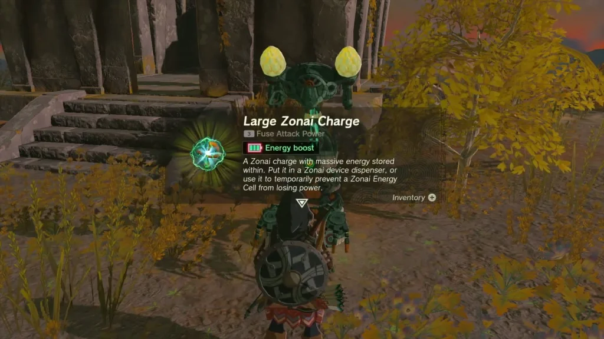
Hộp vật phẩm Pin Zonai Cỡ Lớn cầm bên Steward Construct (ảnh 3/3)
Máy phân phát thiết bị. Một máy phân phát Thiết Bị Zonai đứng cạnh ao. Nạp một Pin Zonai để nhận ngẫu nhiên một viên nang: Khinh Khí Cầu, Quạt, Nồi Di Động hoặc Bom Hẹn Giờ.
Ảnh minh họa: máy phân phát Thiết Bị Zonai (2 ảnh)
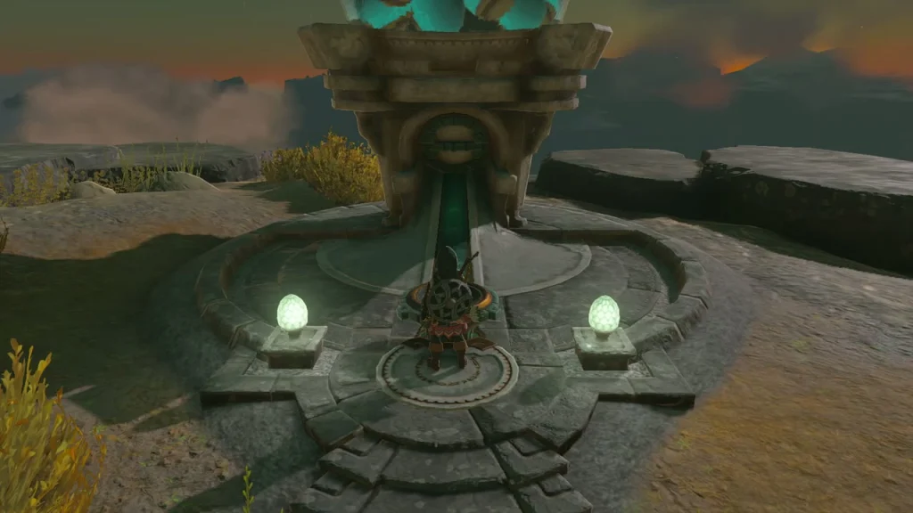
Máy phân phát Thiết Bị Zonai vòm xanh ngọc bên ao (ảnh 1/2)
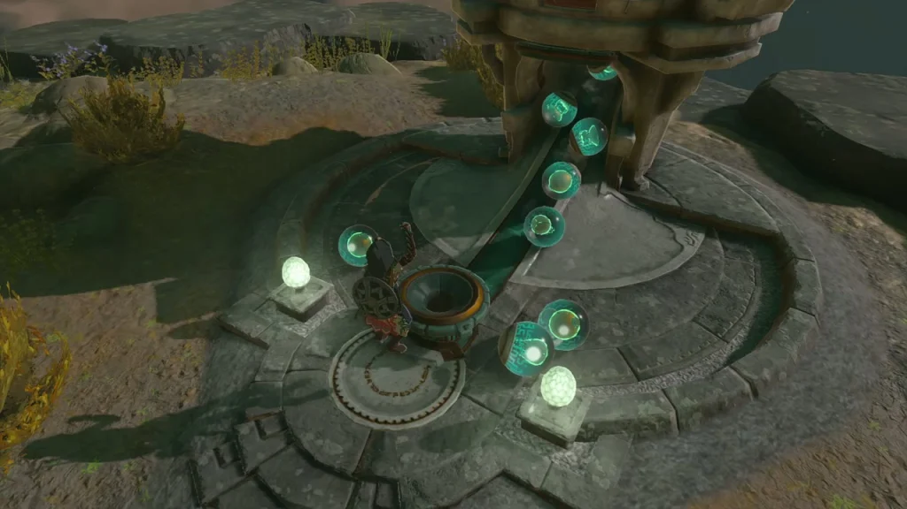
Bát của máy phân phát với một viên nang và Pin Zonai (ảnh 2/2)
Đại Tiên và mũi tên. Đi dọc các thềm quanh ao để tìm một Đại Tiên lơ lửng trên mép nước và một căn phòng đá bên kia thềm có mũi tên nằm trên sàn.
Ảnh minh họa: Đại Tiên và phòng mũi tên (2 ảnh)
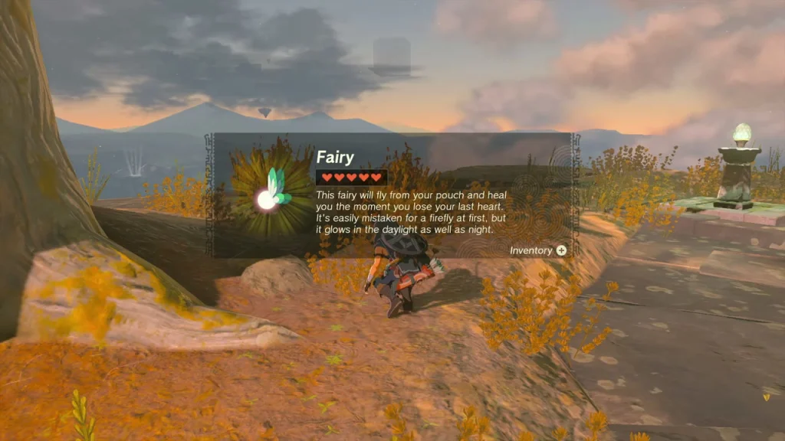
Hộp vật phẩm Đại Tiên bên ao trên Đảo Courage (ảnh 1/2)
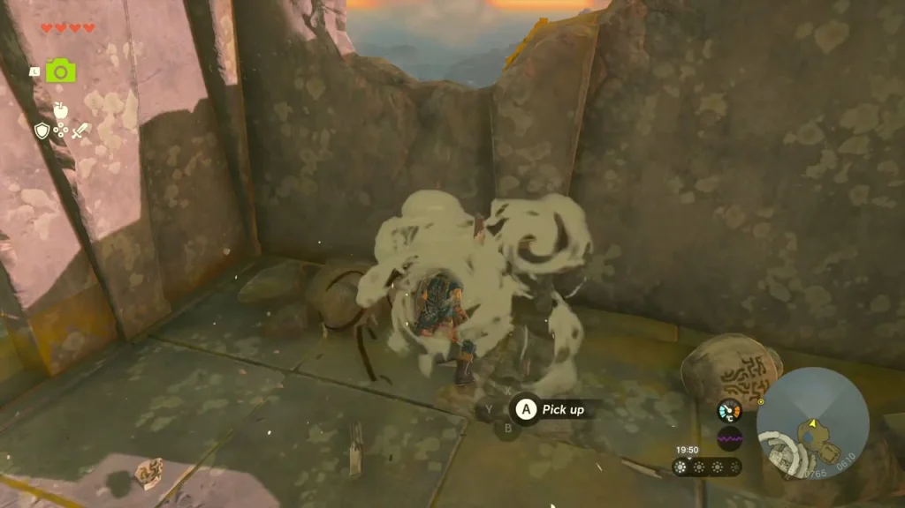
Căn phòng đá với bó mũi tên nằm trên sàn (ảnh 2/2)
Hạt Korok (gờ trên cột đá). Cạnh đền, leo cột đá ở mép đảo lên một gờ hẹp có gốc cây khắc hình lá trên đỉnh. Bước ra khỏi mép rồi lượn xuống theo hông cột; một Korok treo trên chiếc lá lơ lửng ngay dưới gờ. Soi nó để nhận hạt. Áo Lượn giúp bạn tiếp đất an toàn hơn.
Ảnh minh họa: hạt Korok dưới gờ cột đá (4 ảnh)Cột đá ở mép Đảo Courage với gốc cây khắc lá trên đỉnh (ảnh 1/4)Gốc cây khắc hình lá đã bị chặt trên gờ hẹp ở đỉnh cột (ảnh 2/4)Chiếc lá xanh bung ra giữa không trung dưới cột khi Korok hiện ra (ảnh 3/4)Hộp vật phẩm Hạt Korok phía trên Korok treo giữa không trung (ảnh 4/4)
Sườn Hyrule và Hang Lindor’s Brow
Hạt Korok (Xuyên). Lượn khỏi Đảo Courage về phía những ngọn đồi đá nhạt của Sườn Hyrule, đông nam tháp. Tìm cái lỗ tròn trên hông một quả đồi, bên cạnh là một cây cột đá đổ. Thả người xuống, đứng dưới gốc cây trên trần và dùng Xuyên để trồi lên đỉnh đồi, nơi Korok đang đợi.
Ảnh minh họa: hạt Korok bằng Xuyên trên sườn đồi (3 ảnh)Quả đồi nhạt dốc xuống với lỗ tròn trên hông và một cây cột đá (ảnh 1/3)Lời nhắc Xuyên trên trần đá bên trong cái lỗ (ảnh 2/3)Korok trên đỉnh đồi phía trên cái lỗ, trao Hạt Korok (ảnh 3/3)
Cửa Hang Lindor’s Brow. Chính cái lỗ đó dẫn xuống Hang Lindor’s Brow. Mang theo đồ chống U Ám, Hạt Sáng và mũi tên; hang tối và đầy U Ám.
Ảnh minh họa: cửa Hang Lindor’s Brow (2 ảnh)Cái lỗ lớn trên sườn đồi nhìn từ trên cao khi lượn về Hang Lindor’s Brow (ảnh 1/2)Cửa hang đầy cỏ của Hang Lindor’s Brow bên vách đá (ảnh 2/2)
Phantom Ganon (miniboss). Trong gian chính, Bàn Tay U Ám bò lên khỏi các vũng, và Phantom Ganon trồi lên khi bạn hạ chúng. Bắn mũi tên bom từ gờ cao rất hiệu quả, và đồ ăn tăng tấn công giúp thêm. Nó rơi Gloom Sword (có thể là một vũ khí U Ám khác) và Dark Clump, cũng có thể rơi Cung Ma Vương. Trận này không bắt buộc: Bàn Tay U Ám chỉ đáng bận tâm nếu bạn muốn đánh.
Ảnh minh họa: trận Phantom Ganon trong hang (2 ảnh)Thanh máu Phantom Ganon và một vụ nổ trong hang tối (ảnh 1/2)Hộp vật phẩm Gloom Sword trong hang tối (ảnh 2/2)
Ngọc Bubbul. Leo lên gờ cao hơn ở phía tây bắc gian chính.
Ảnh minh họa: leo lên gờ có Bubbulfrog (2 ảnh)Leo vách đá lên gờ cao trong hang tối với lời nhắc Nhảy và Buông (ảnh 1/2)Bubbulfrog nhạt màu cao trên không gian tối của hang (ảnh 2/2)
Đền Thờ Nhỏ Taki-ihaban (Chúc phúc). Qua con ếch, một vòm đá có cổng xanh phát sáng dẫn tới Đền Thờ Nhỏ Taki-ihaban. Không có câu đố: mở rương lấy Pin Zonai Cỡ Lớn rồi nhận Ánh Sáng Chúc Phúc. Sau đó dùng Xuyên qua trần hang để về mặt đất.
Ảnh minh họa: Đền Thờ Nhỏ Taki-ihaban (2 ảnh)Cổng vòm xanh phát sáng của Đền Thờ Nhỏ Taki-ihaban trong hang (ảnh 1/2)Cầu đá dẫn tới Đền Thờ Nhỏ Taki-ihaban giữa hai cột đèn (ảnh 2/2)